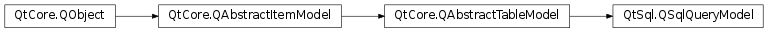

QSqlQueryModel¶
Inherited by: QSqlTableModel, QSqlRelationalTableModel
Detailed Description¶
The
PySide2.QtSql.QSqlQueryModelclass provides a read-only data model for SQL result sets.
PySide2.QtSql.QSqlQueryModelis a high-level interface for executing SQL statements and traversing the result set. It is built on top of the lower-levelPySide2.QtSql.QSqlQueryand can be used to provide data to view classes such asPySide2.QtWidgets.QTableView. For example:model = QSqlQueryModel() model.setQuery("SELECT name, salary FROM employee") model.setHeaderData(0, Qt.Horizontal, tr("Name")) model.setHeaderData(1, Qt.Horizontal, tr("Salary")) view = QTableView() view.setModel(model) view.show()We set the model’s query, then we set up the labels displayed in the view header.
PySide2.QtSql.QSqlQueryModelcan also be used to access a database programmatically, without binding it to a view:model = QSqlQueryModel() model.setQuery("SELECT * FROM employee") salary = model.record(4).value("salary")The code snippet above extracts the
salaryfield from record 4 in the result set of the querySELECT * from employee. Assuming thatsalaryis column 2, we can rewrite the last line as follows:salary = model.data(model.index(4, 2))The model is read-only by default. To make it read-write, you must subclass it and reimplement
PySide2.QtCore.QAbstractItemModel.setData()andPySide2.QtCore.QAbstractTableModel.flags(). Another option is to usePySide2.QtSql.QSqlTableModel, which provides a read-write model based on a single database table.The querymodel example illustrates how to use
PySide2.QtSql.QSqlQueryModelto display the result of a query. It also shows how to subclassPySide2.QtSql.QSqlQueryModelto customize the contents of the data before showing it to the user, and how to create a read-write model based onPySide2.QtSql.QSqlQueryModel.If the database doesn’t return the number of selected rows in a query, the model will fetch rows incrementally. See
PySide2.QtSql.QSqlQueryModel.fetchMore()for more information.See also
PySide2.QtSql.QSqlTableModelPySide2.QtSql.QSqlRelationalTableModelPySide2.QtSql.QSqlQueryModel/View Programming Query Model Example
-
class
PySide2.QtSql.QSqlQueryModel([parent=nullptr])¶ Parameters: parent – PySide2.QtCore.QObjectCreates an empty
PySide2.QtSql.QSqlQueryModelwith the givenparent.
-
PySide2.QtSql.QSqlQueryModel.clear()¶ Clears the model and releases any acquired resource.
-
PySide2.QtSql.QSqlQueryModel.indexInQuery(item)¶ Parameters: item – PySide2.QtCore.QModelIndexReturn type: PySide2.QtCore.QModelIndexReturns the index of the value in the database result set for the given
itemin the model.The return value is identical to
itemif no columns or rows have been inserted, removed, or moved around.Returns an invalid model index if
itemis out of bounds or ifitemdoes not point to a value in the result set.See also
QSqlTableModel.indexInQuery()PySide2.QtSql.QSqlQueryModel.insertColumns()PySide2.QtSql.QSqlQueryModel.removeColumns()
-
PySide2.QtSql.QSqlQueryModel.lastError()¶ Return type: PySide2.QtSql.QSqlErrorReturns information about the last error that occurred on the database.
-
PySide2.QtSql.QSqlQueryModel.query()¶ Return type: PySide2.QtSql.QSqlQueryReturns the
PySide2.QtSql.QSqlQueryassociated with this model.
-
PySide2.QtSql.QSqlQueryModel.queryChange()¶ This virtual function is called whenever the query changes. The default implementation does nothing.
PySide2.QtSql.QSqlQueryModel.query()returns the new query.
-
PySide2.QtSql.QSqlQueryModel.record(row)¶ Parameters: row – PySide2.QtCore.intReturn type: PySide2.QtSql.QSqlRecordReturns the record containing information about the fields of the current query. If
rowis the index of a valid row, the record will be populated with values from that row.If the model is not initialized, an empty record will be returned.
See also
-
PySide2.QtSql.QSqlQueryModel.record() Return type: PySide2.QtSql.QSqlRecordThis is an overloaded function.
Returns an empty record containing information about the fields of the current query.
If the model is not initialized, an empty record will be returned.
See also
-
PySide2.QtSql.QSqlQueryModel.setLastError(error)¶ Parameters: error – PySide2.QtSql.QSqlErrorProtected function which allows derived classes to set the value of the last error that occurred on the database to
error.
-
PySide2.QtSql.QSqlQueryModel.setQuery(query[, db=QSqlDatabase()])¶ Parameters: - query – unicode
- db –
PySide2.QtSql.QSqlDatabase
This is an overloaded function.
Executes the query
queryfor the given database connectiondb. If no database (or an invalid database) is specified, the default connection is used.PySide2.QtSql.QSqlQueryModel.lastError()can be used to retrieve verbose information if there was an error setting the query.Example:
model = QSqlQueryModel() model.setQuery("select * from MyTable") if model.lastError().isValid(): print model.lastError()
-
PySide2.QtSql.QSqlQueryModel.setQuery(query) Parameters: query – PySide2.QtSql.QSqlQueryResets the model and sets the data provider to be the given
query. Note that the query must be active and must not be isForwardOnly().PySide2.QtSql.QSqlQueryModel.lastError()can be used to retrieve verbose information if there was an error setting the query.Note
Calling will remove any inserted columns.
© 2018 The Qt Company Ltd. Documentation contributions included herein are the copyrights of their respective owners. The documentation provided herein is licensed under the terms of the GNU Free Documentation License version 1.3 as published by the Free Software Foundation. Qt and respective logos are trademarks of The Qt Company Ltd. in Finland and/or other countries worldwide. All other trademarks are property of their respective owners.